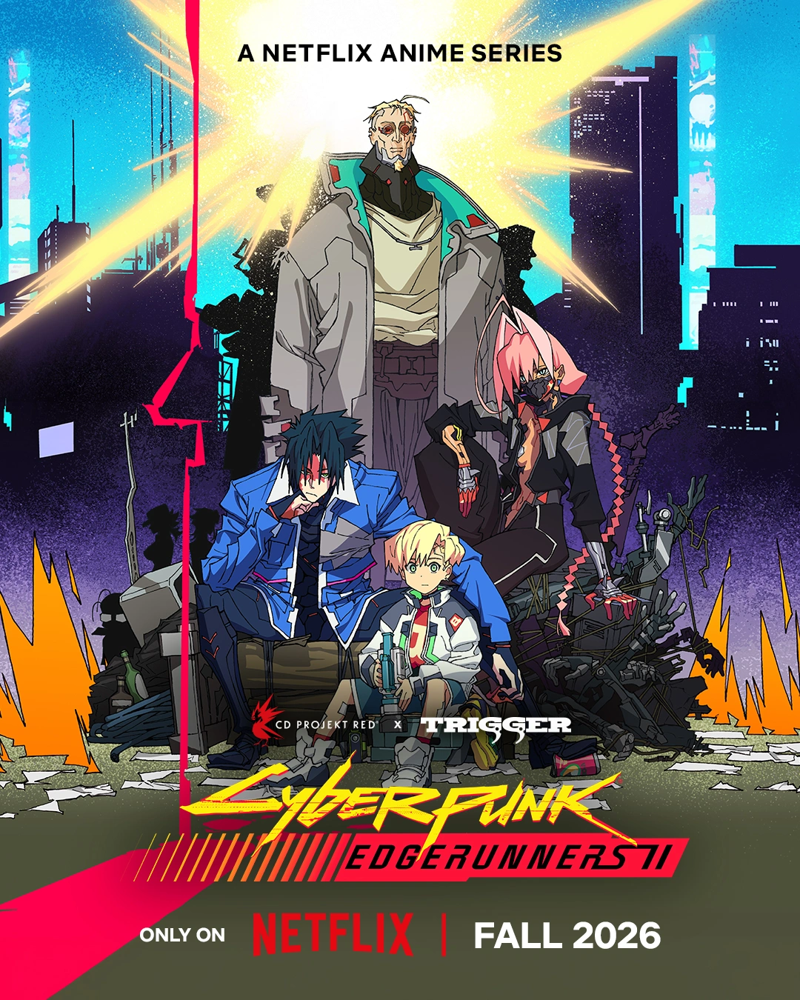

A primeira temporada de Cyberpunk Mercenários saiu em 2022 na Netflix.
A história se passa antes do jogo, em 2076 e conta a história de personagens originais mas passando por lugares presentes no jogo.

A segunda temporda saiu em 2026 e se passa em 2078, mas sem os personagens do jogo ou da primeira temporada, tendo personagens originais, a história tem conexões com coisas que acontecem no jogo mas sem mencionar nada diretamente.